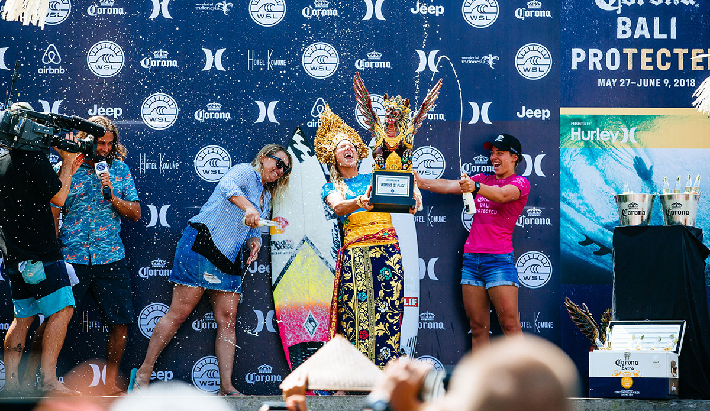
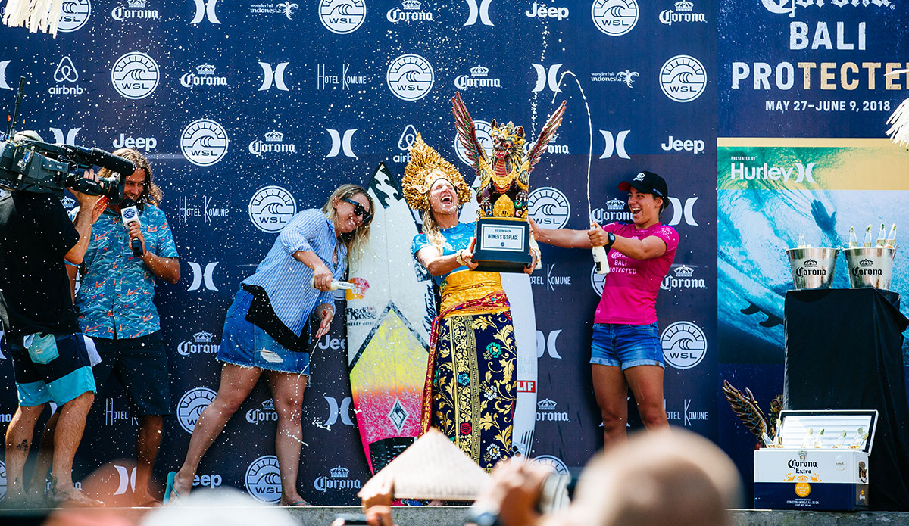

Competitions:
The World Surf League (WSL) is the main governing body for competitive surfing. They organize competitions around the world, including Championship Tour (CT) and Qualifying Series (QS) events. The Championship Tour is the top tier of surfing in the world, consisting of ten or eleven events per year at the best breaks and spots, that ultimately determine the world champion. The QS consists of the surfers competing for a spot on the CT. This year, the WSL became the first American sports league to offer equal prize money for men and women.
The International Surfing Association (ISA) also organizes surfing events where nation’s teams compete against each other for the world titles.
Next year, surfing will be an olympic sport for the first time!
How Surf Competitions Work
Surf competitions are usually allotted several days to run. This allows for some off days where the competition will not occur due to lower-quality surf. The entire competition usually takes around 4 days to run. Some will take more or less time. Generally, surfers surf in two-, three-, or four-person heats, with the top one or two moving on to the next round and the rest eliminated. This continues in a bracket format until there is a 2-4 surfer final heat. This format can vary depending on the competition. For example, some events have rounds without eliminations, while ones taking place in wave pools require different formats.
In heats, surfers spend an allotted period of time alone in the water trying to catch waves that will give them the highest heat score. Each wave they ride is individually scored on a scale of 1 to 10, based on factors like number and degree of difficulty of maneuvers, execution of maneuvers, commitment/risk on the wave, and wave choice. 5 judges each score the wave. Then the average of the three middle scores becomes the wave score. Then, the heat score is made up of the sum of the two highest wave scores. A set of rules called priority governs who can catch which waves, prevents surfers from stealing waves from each other, and avoids dangerous and unsportsmanlike situations. The judging and heat system can vary for specialty events and events in wave pools. The WSL also occasionally runs an overlapping heat format where multiple heats will run in the water at the same time.
 
